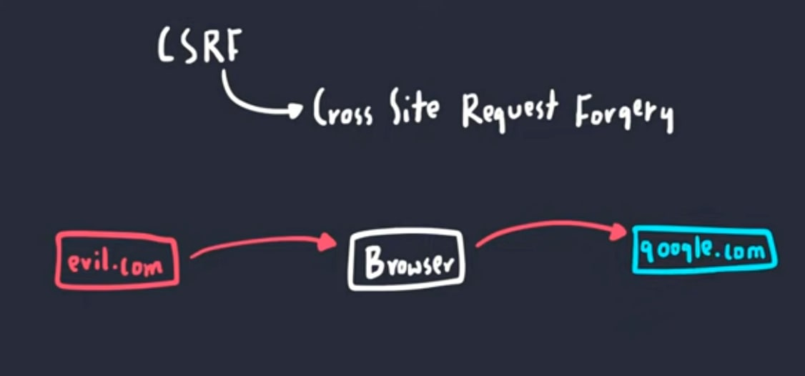

دوتا مفهوم سوای از هم داریم ، که خیلیا اینارو باهم اشتباها قاطی میکنن:
من سعی میکنم جدا جدا توضیح بدم ، و بگم چیه...
ــــــــــــــــــــــــــــــــــــــــــــــــــــــــــــــــــــــــــ
قبل از اینکه شروع کنم یه مفهومی هست که پیشنیازه توضیح بدم، بهش میگن:
یه پالیسی (سیاست/قانون/عرف...) هست که توی وب رعایتش میکنن ، اونم اینه که کلاینت/سرور ها رکوئستی رو valid میپندارن و معتبر میدونن که دقیقا از منبع درستش (منبع قبلی) باشه.
این اعتبار سنجی هم با چک کردن 3 تا چیز مشخص میشه:
1- پرتکلش همون باشه (مثلا HTTP)
2- آدرس هاست (دامین) همون باشه
3- پورت دقیقا همون باشه
مثلا یکی میاد یه رکوئست رو عوض میکنه به سمت براوزر شما و میگه من گوگلم:
https://hacker.com:80براوزر شما از گوگل صحیح رو این میدونه:
https://google.com:80حالا میاد چک میکنه:
https://hacker.com:80
https://google.com:80
\____/ \______/ \__/
Protocol Host Portیکی از شرطها برقرار نیست پس ارور: Same Origin Policy میده و رکوئست دراپ میشه😬
با این پالیسی میشه جلوی خیلی از حمله هارو گرفت ، ولی حملات دیگری هستن که با وجود این پالیسی بازم قابل انجام هستن مثل:
که که قراره راجع بهشون حرف بزنیم ✅
ایکس اس اس ، XSS مخفف XSS : Cross Site Scripting هست.
بطور کلی : یعنی که در یک سایت ، کد جاوااسکریپت اینجکت (تزریق) کنیم! یعنی یه جوری کد جاوا اسکریپت رو بچپونیم توی بدنه سایت ، که کده اجرا بشه!
سناریوهای مختلف داره.... مثلا من یادمه اون اوایل که وبلاگستان فارسی راه افتاده بود و همه واسه خودشون یه وبلاگ درست میکردن توی بلاگفا و😋😬 وبلاگ نویسی تازه به اون معنا توی ایران راه افتاده بود ، خیلی راحت میشد XSS رو توی وبلاگ ها زد!
کافی بود یه کد جاوا اسکریپت رو توی قسمت کامنتها بذارین ، بجای کامنت... و 90 درصد سایتها اعتبار سنجیش نمیکردن و وقتی کامنتت نشون داده میشد ، کد شما هم برای بقیه مردم ران میشد😶🌫️
و نابود....😬
لین روزها پیاده سازیش به این راحتیا نیست...
به هر نوع Javascript injection در یه وبسایت میگن XSS.
ایکس اس اس انواع مختلفی داره:
ایکس-اس-اس بازتابی:
مثلا یه سایتی هست ، یه فرمی داره که هر چی توش بنویسی میره سمت سرور و برمیگرده و بخش از کانتنت HTML صفحه میشه.
مثلا یه صفحه ساده رو فرض کنین ، که توی قسمت
name : ————————————
توی فرم هرچی بنویسن و فرم رو سابمیت کنسن ، درخواستت میره و برمیگرده و هرچی توی name نوشته باشین رو نشون میده:
Your name is : "behrad"
اگه من به جای behrad یه کد جاوااسکریپت بزنم ، میره و میاد و اجرا میشه... این میشه بازتابی.
ایکس اس اس ذخیره شده ، زمانی هست که کد مخرب میره توی یه دیتابیسی ذخیره میشه، و از اون به بعد از توی دیتابیس خونده میشه و میاد(شاید به همه مردم زینپس حمله صورت بگیره)
یک نوع xss کلاینت ساید هست و زمانی هست که ایکس اس اس رو روی آبجک DOM میزنیم ( تخصصیه) وقتی DOM دست یه اسکریپت مخرب بیفته ، همه چیز صفحه دستش افتاده...
زمانی که یه جهشی توی اینپوت کلاینت صورت بگیره...
انواع دیگه هم داره که از حوصله این مقاله خارجه🙂
پس XSS یعنی که در یک سایت ، کد جاوااسکریپت اینجکت (تزریق) کنیم!
حمله CSRF/XSRF سیسرف (موجسواری در دریا- sea surf) یا سی اس آر اف یا ایکس اس آر اف ، مخفف CSRF/XSRF : Cross Site Request Forgery هست.
به طور کلی این حمله یعنی:
یک دامین ، رکوئستی که مربوط به دامین دیگری هست رو جعل میکنه و نهایتا مقادیری رو تغییر میده.
عکس زیر رو مشاهده بفرمائين👇

نکته: این شکل رو از یه ویدیو گرفتم که لینکشو توی قسمت منابع میفرستم.
من این حمله رو با مثال توضیح میدم.
این حمله به شدت گسترده هست ، ازش میشه هزاران تا مثال زد:
فرض کنید یه url توی سایت داریم که هر موقع این url رو فراخونی کنیم ، و یه مقدار خاصی رو پست کنیم (HTTP POST) یه اتفاقی می افته... ( مثلا اکانتمون حذف میشه)
یه نوع API ساده طراحی شده... همه هم همینجوری طراحی میکنن..✅
طرف سایت فروم رو اینطوری طراحی کرده که برای حذف اکانت دکمه فلان رو بزن، که اون دکمه ریدایرت میده به :
mywesite.com/delete_my_acc.php
و اگر پارامتری به اسم delete با مقدار 1 از طرف من پست بشه، اکانت من پاک میشه.✅ همه همینجوری طراحی میکنن دیگه...
حالا،
من خودم نمیخوام اکانتم رو پاک کنم ! دارم توی سایت برای خودم میجرخم که میبینم یه نفر توی فروم یه لینک داده که یه عکس سسکی خشگلی هست❌😬
منم تحریک میشم و روش کلیک میکنم! ریدایرکت میشم به یه سایت سسکی و یه عکس سسکی تر هم میبینم و به خیال خودم کیف میکنم😬😀 بعدش برمیگردم که بیام توی فروم دوباره بچرخم...
منتهی بهم ارور میده که اکانت شما پاک شده! و من دیگه اکانتی ندارم!
چه اتفاقی افتاد؟
من یک اتک XSRF خوردم و خودم خبر ندارم!
بیاین حمله رو بررسی کنیم.
سورس کد سایت سسکی این بوده:
<img source="sexy.png" >
<form
action="mywesite.com/delete_my_acc.php"
method="POST"
id="sexy"
>
<input type="hidden" name="delete" value="1" />
</form>
<script>
document.getElementById("sexy").submit()
</script>برای خودتون تحلیل کنین ببینین چیکار میکنه...
من یه خلاصه ای میگم:
با جاوااسکریپت یه ریکوئست میزنه به اون URL و میگه که من بهرادم ... میخوام اکانتم رو پاک کنم!!! باورت نمیشه من بهرادم؟ اینم کوکی هام!!!!!! 🍪🍪🍪🍪🍪🍪
(کوکی های من رو چجوری گرفت؟! نگرفت! خود براوزر شما برای هر URL که کش کرده {میشناسه} کوکی هارو انکپسوله میکنه و میفرسته همیشه.... واسه همینه که شما میتونی توی یه سایت لاگین کنی!)
خلاصه من CSRF خوردم و اکانت من پاک شد...
سیاست SOP که قبلش توضیح دادم، اینجا فقط جلوی این رو میگیره که سایت سسکی هکر نتونه جواب ریکوئست رو بگیره... یعنی ریکوئست رفته و موقع برگشت جوابش دراپ شده.... خب چه فایده... اکانت من پاک شده :) هکر چیزی از نتیجه رو ندید.... فقط تیری توی تاریکی در کرد!
این یه مثال خیـــــــــــلی ساده بود...
حمله CSRF
من به همین جا بسنده میکنم...
خلاصه کلام اینکه:
سی-سرف یعنی یک دامین ، رکوئستی که مربوط به دامین دیگری هست رو جعل میکنه و نهایتا مقادیری رو تغییر میده.
https://en.wikipedia.org/wiki/Cross-site_scripting
https://en.wikipedia.org/wiki/Cross-site_request_forgery
https://www.youtube.com/watch?v=EoaDgUgS6QA
https://www.youtube.com/watch?v=eWEgUcHPle0
دو ویدیو آخر بسیار عالی هستن.